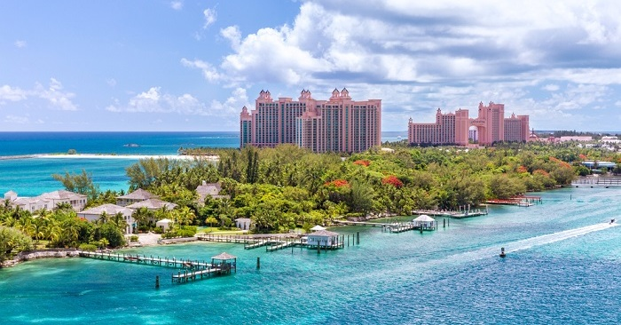
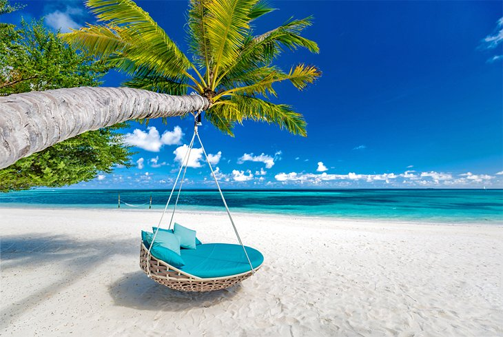
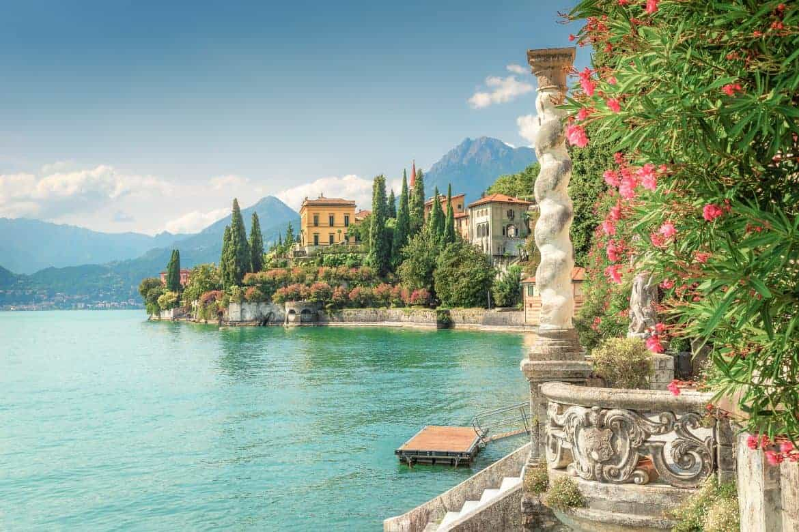

Don't miss the best things to do and iconic places to visit in London. Explore the city on sightseeing tours, soak up culture at museums and galleries, or choose from the many free things to do. Treat yourself on famous shopping streets or celebrate special occasions at world-class theatre shows, restaurants and bars.
Bahamas
The best kept secret of The Bahamas is the country’s sheer size and diversity. With 16 major islands, The Bahamas is an unmatched destination, a heart-pounding adventure across 100,000 square miles of the world’s clearest ocean.

Seychelles
I’ve been to a lot of beaches, and I’ve loved them all, but there’s something magical about the boulder-dotted coastlines of the Seychelles Islands. There’s a reason they call the Seychelles “paradise on earth,” and you’ll see as soon as you arrive.

Lake Como
Lake Como, also known as Lario, is the third largest of the Italian lakes (after Lake Garda
Its characteristic shape, reminiscent of an inverted Y, results from the melting of glaciers combined with the erosive action of the ancient Adda river. This led to the formation of the two southern branches, in the midst of which there is the world popular Bellagio

Santiago de Compostela
For centuries, thousands of pilgrims have travelled on Saint James’ Way every year, finally reaching the capital of Galicia and entering the iconic Cathedral. According to tradition, this is the burial place of the relics of James the Apostle, discovered in the 9th century.
But Santiago de Compostela is very much a living city, with other attractions for travellers, pilgrim or not: countless restaurants and bars where you can enjoy the delicious seafood of Galicia, a UNESCO World Heritage old town centre, daring contemporary art… There's plenty to do in this city which combines history with a younger modern side.